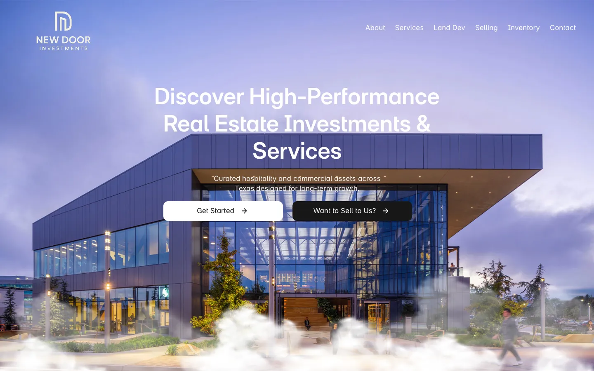
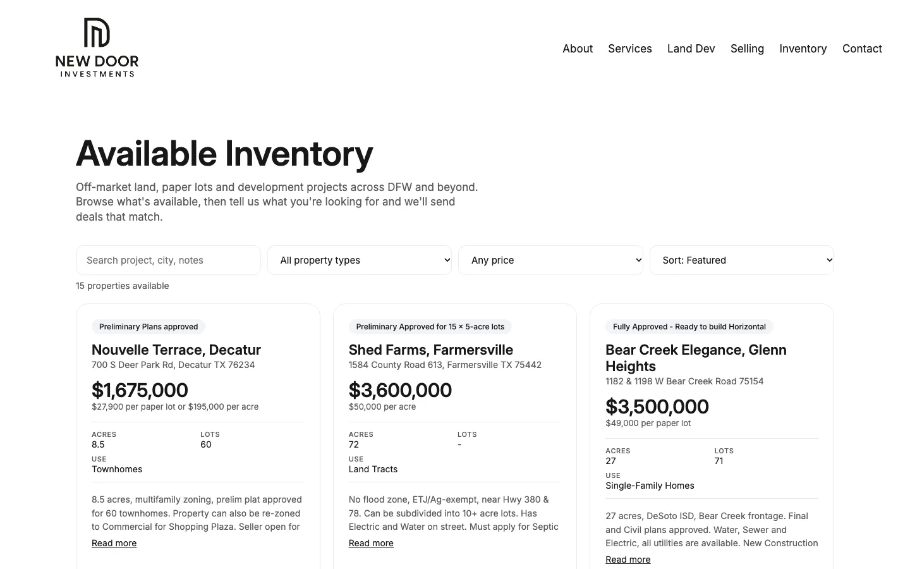

Client site and tools
New Door Investments
Website and tools for a Texas land and real estate investment firm.
- newdoorinvestments.net
- Inventory site
- Private repo

The numbers
- 68 of 69commits on the site
- 25,000emails a month for about $8
- 48tools in the CRM connector for Claude
- 15properties on the inventory site today
The problem
A land and real estate firm whose website was a design-tool page, whose listings lived in a spreadsheet, and whose leads lived in a CRM.
New Door sources and manages land and commercial property in Texas. The marketing site was built in Framer. Listings changed often and were kept in a Google Sheet. Buyers who wanted to be told about deals had no way to say what they wanted, and the team sent email in bulk through a tool that charged by the contact.
Approach
Keep the tools the team already used, and connect them with small pieces of code instead of replacing them.
- Move the main site to Next.js on Vercel, with Google Analytics, so pages are code in a repository and load fast.
- Add pages that sell the work: land development pages, a booking page and case studies.
- Build the inventory site as a single static page that reads listings straight from the team's Google Sheet.
- Send leads where the team already works. The buyer form posts into their CRM.
- Build two tools for the team: a desktop bulk email app and a connector that lets Claude work inside the CRM.
How a lead moves
- Google SheetThe team edits listings here
- Inventory siteLoads the sheet live on every visit
- Buyer formA buyer says what they want
- CRMThe lead lands as a contact with fields filled in
The inventory page reads the sheet by column position, so the team keeps the first ten columns in order: name, address, city, acres, lots, use, price per unit, asking price, status and notes. A copy of the data is built into the page as a fallback, so listings still show if the sheet cannot be reached.
The buyer form asks for 18 fields, including buyer type (builder, investor, land banker or realtor), target county and city, price range, acres, lots, funding and timeline. It posts JSON to a webhook in the CRM, which creates the contact and applies a tag.
Results
| What | Number |
|---|---|
| Site commits that are mine | 68 of 69 |
| Bulk email cost | About $8 a month for 25,000 emails |
| CRM connector | 48 tools |
| Listings on the inventory site today | 15 properties |
| Fields on the buyer form | 18 |
The main site presents three services: a standing land development advisor, three-level land due diligence reports, and coaching for first-time flippers. Visitors can book a call or ask to sell to the firm directly from the home page.
What I owned
- Moved the site off Framer to Next.js on Vercel, and added Google Analytics.
- Added land development pages, a booking page and case studies.
- Built the inventory site. Listings load live from a Google Sheet, and the buyer form sends leads straight into their CRM.
- Built a desktop bulk email app for the team on Amazon SES. About $8 a month for 25,000 emails.
- Built a connector with 48 tools that lets Claude work inside their CRM.
What I learned
- A spreadsheet works as a content system when its columns are treated like a contract, written down and not reordered.
- A built-in fallback copy of the data costs little and keeps the page useful when the sheet is slow or private.
- Connecting existing tools beat replacing them. The team kept their habits and gained a site, a form and a mailer.
Screens

